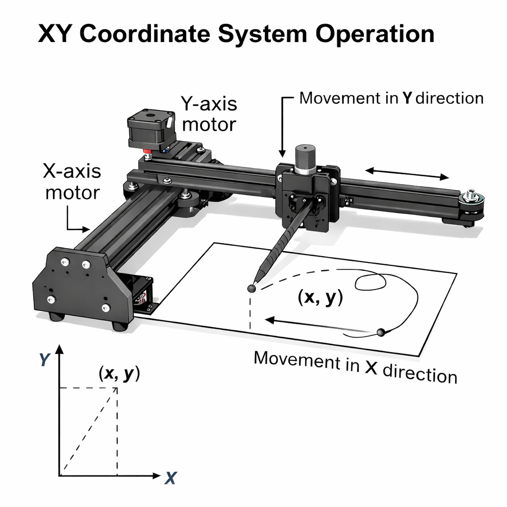
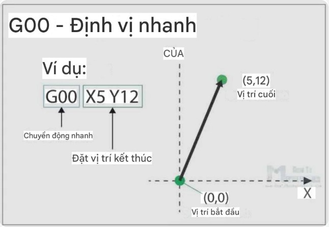
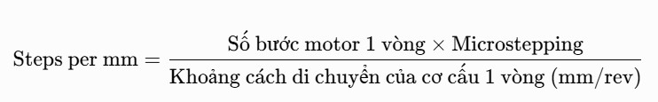

Máy vẽ kỹ thuật
Plotter 2D
Nguyên lý hoạt động

-
Nguyên lý hoạt động của hệ thống máy vẽ mạch in điện tử (PCB Plotter)
dựa trên cơ chế điều khiển tọa độ không gian theo các trục X, Y và Z.
-
Trục X và Y: Hai trục này điều khiển chuyển động ngang và dọc của bút
vẽ. Động cơ bước gắn trên các trục sẽ di chuyển bút vẽ theo đúng vị
trí tọa độ đã được chỉ định trong file G-code.
-
Trục Z: Trục Z đảm nhận việc nâng hạ bút vẽ, dùng động cơ servo sg90
gắn trên trục. Khi cần vẽ, bút sẽ được hạ xuống tiếp xúc với bề mặt
board đồng. Khi cần di chuyển sang vị trí khác mà không vẽ, bút sẽ
được nâng lên.
-
Bộ điều khiển trung tâm: Hệ thống sử dụng vi điều khiển như Arduino,
có nhiệm vụ đọc dữ liệu G-code, sau đó điều khiển tốc độ, hướng và
khoảng di chuyển của từng động cơ bước trên các trục X, Y, Z.
Khái niệm G-code

-
G-code (Geometric Code) là ngôn ngữ lập trình tiêu chuẩn dùng để điều khiển các máy CNC, máy in 3D, máy vẽ tự động và các thiết bị gia công điều khiển số.
-
Nó được phát triển để mô tả các chuyển động và thao tác máy một cách chính xác, giúp thực hiện quá trình gia công hoặc vẽ tự động.
-
Chức năng chính của G-code: Xác định tọa độ di chuyển của đầu công cụ (theo trục X, Y, Z), điều chỉnh tốc độ di chuyển (Feedrate – F), điều khiển các thiết bị phụ trợ như: Bật/tắt spindle, laser, servo (lệnh M3, M5),…
Nguyên lý chia Step

- Nếu không chia động cợ bước sẽ chạy tường bước lớp
- => Động cơ chạy giật, rung mạnh và kêu (tốc độ thấp)
- Độ phân giải thấp nét vẽ sẽ không được chuẩn và mượt